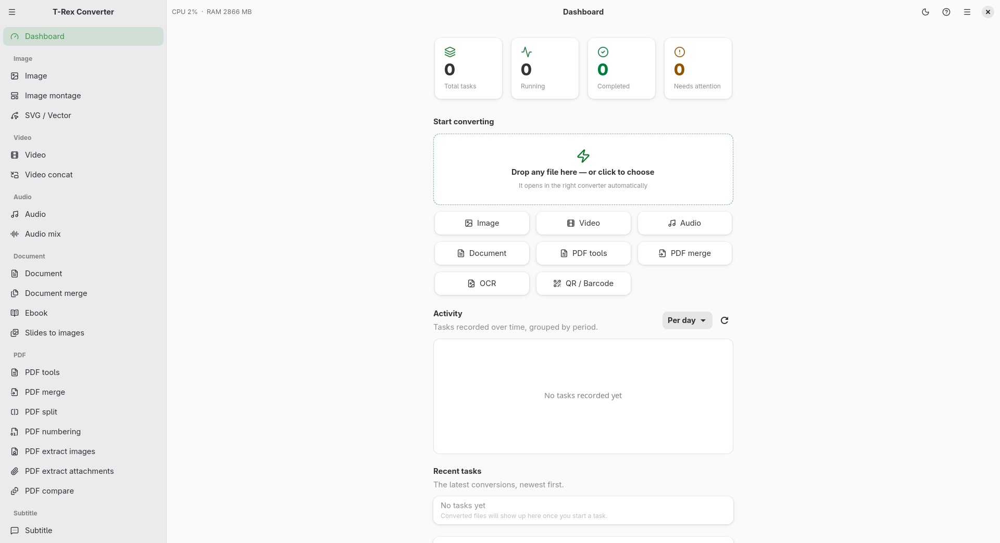
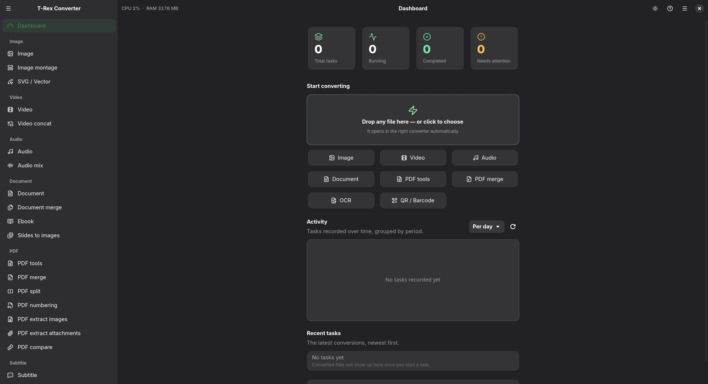

Any↔any across png, jpg, webp, avif, heic, gif, tiff, bmp, ico.
- Resize, crop, color, filters, borders, watermarks
- Metadata strip on export
- Montage: stitch many images into one grid
- SVG render to bitmap & bitmap trace to vector
Convert anything. Upload nothing.
A native GTK4 / libadwaita app for Linux that converts images, video, audio, documents, PDFs, subtitles, ebooks, and archives — entirely on your machine. One calm front-end over FFmpeg, ImageMagick, LibreOffice, Pandoc, Tesseract, and friends.
.rpm for Fedora 41+ (noarch). All versions on the releases page.


The real dashboard: drop a file on the card and it opens in the right converter automatically.
T-Rex doesn't reimplement conversion. It orchestrates best-in-class engines — FFmpeg, ImageMagick, LibreOffice, Pandoc, Tesseract, PyMuPDF/qpdf and more — behind a single GTK4/libadwaita interface: an async task queue, presets, and a dashboard instead of a dozen man pages. Every engine is optional; features light up when it's installed.
Click a card for the details.
Any↔any across png, jpg, webp, avif, heic, gif, tiff, bmp, ico.
mp4, mkv, webm, mov — with the FFmpeg power tools attached.
mp3, wav, flac, m4a, opus, ogg — plus the fixes you actually need.
The LibreOffice matrix: docs, sheets, and slides in and out of every office format.
Nine dedicated PDF pages — from conversion to forensic compare.
From paper to searchable PDF — and the odd jobs every desk has.
Drop any file on the quick-convert card; it opens in the right converter automatically.
Conversions run as async tasks — the UI never freezes.
Two little demos, right on this page.
Pick a file — watch it land in the right converter:
Drop any file here — or click a chip above
It opens in the right converter automatically
No account, no cloud credits, no "processing on our servers". A conversion is a local pipeline from drop to done. Step through it:
Each media family gets the engine that does it best.
Every engine is a soft dependency: the app runs without it, the matching features switch off gracefully, and the Dashboard's Engines panel shows live availability.
Grab the RPM from the latest release & install
sudo dnf install ./t-rex-converter-*.noarch.rpmAdd FFmpeg for video & audio (pick one)
sudo dnf install ffmpeg-free
# or the full ffmpeg from RPM FusionOptional: the rest of the engine pack
sudo dnf install ImageMagick libreoffice-writer \
libreoffice-impress libreoffice-calc qpdf \
tesseract pandoc qrencode zbar inkscape \
potrace perl-Image-ExifToolRunning from source instead? git clone the repo and ./run-gtk.sh — see the README for the GTK4 prerequisites.